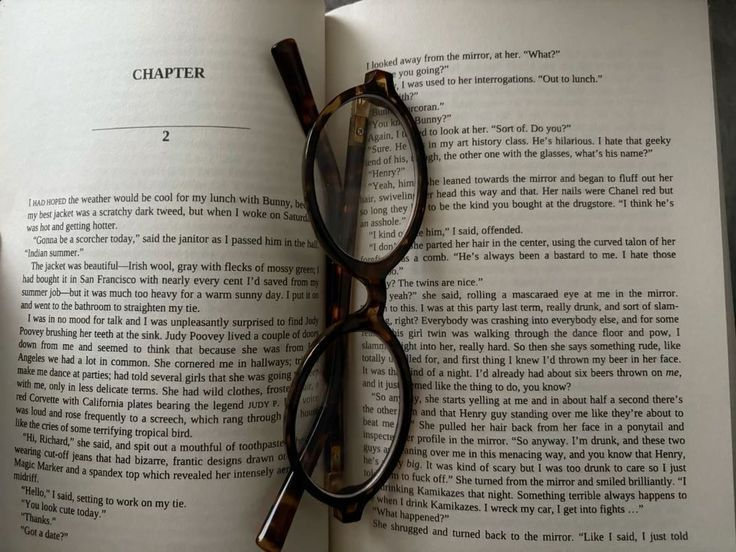
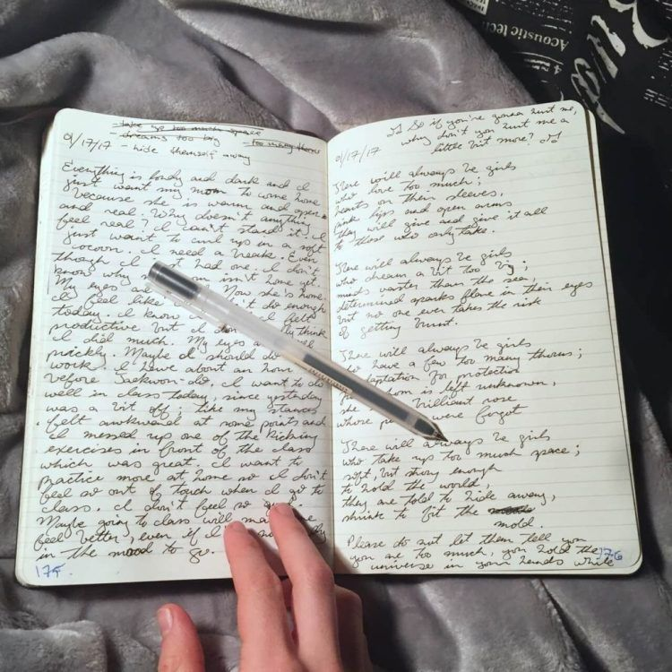
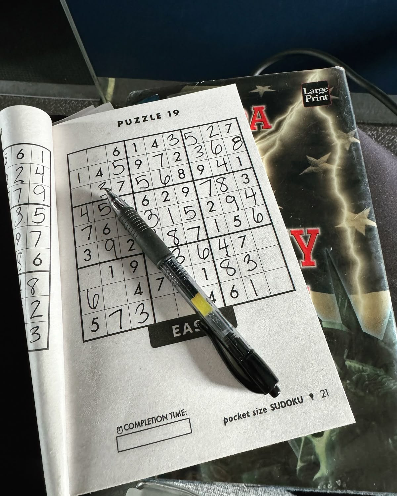
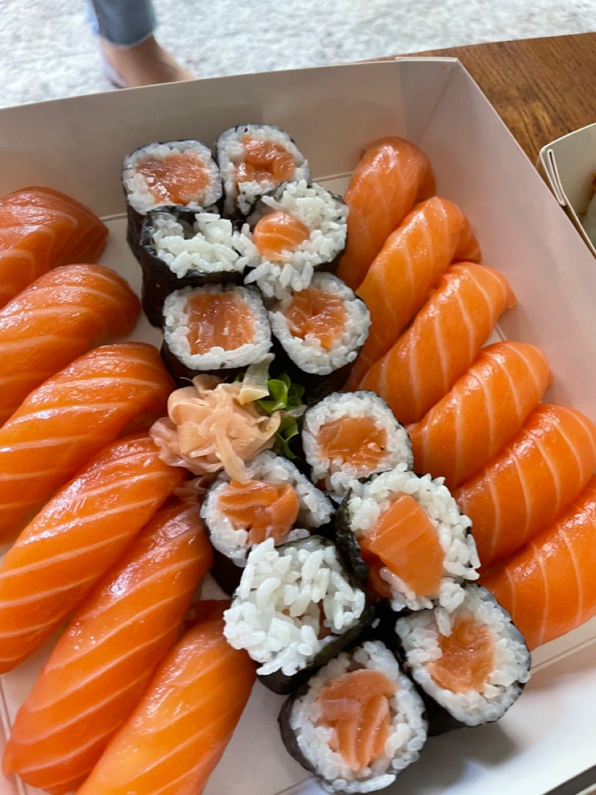
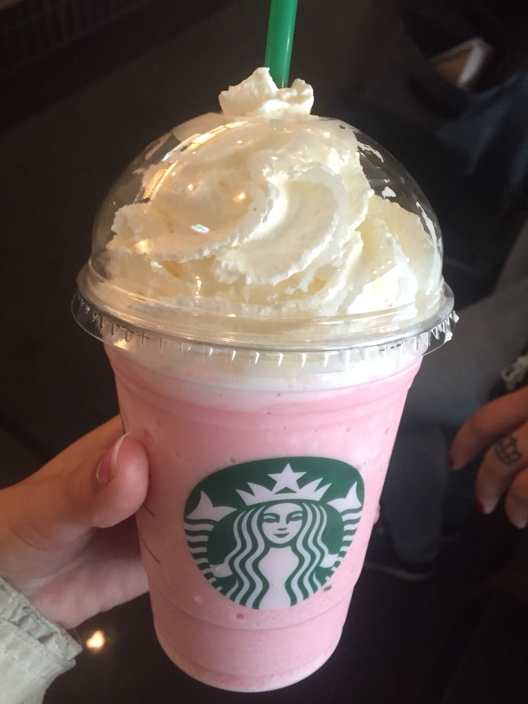

Aku adalah seorang pelajar yang memiliki minat dalam bidang desain dan sains.
Aku senang mempelajari hal-hal baru dan mengembangkan kreativitas melalui hobi aku.
Minat dan bakatku adalah menggambar, membuat ilustrasi dan menulis.
Aku sudah sedari kecil menggemari hal-hal seni karena untukku seni sangatlah
unik dan semua seni memiliki karakternya masing-masing.
Menurutku, seni adalah cara menyampaikan pendapat yang sangat kuat
karena dalam seni, kita bisa mengekspresikan berbagai perasaan
dalam bentuk musik, lukisan ataupun tulisan. Seni adalah ciptaan
manusia yang sangat indah dan aku ingin melanjutkannya di masa depan
nanti.

Membaca

Menulis

Puzzle
PinkPantheress - Stateside + Zara Larsson

Makanan favorit

Minuman favorit
"I'm Working On A Masterpiece And I Haven't Quite Finished It Yet"
Lewis Hamilton